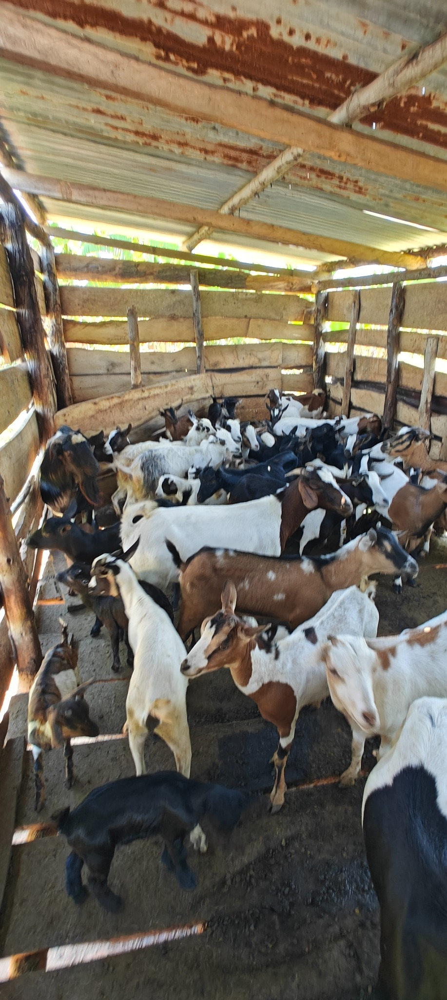

01 / LIVESTOCK
Goat breeding
Goat rearing is a key part of Eco Granja. For now, the focus is on breeding and developing a healthy herd, with room to share more about the animals and the operation as it grows.
Explore farm life ↗